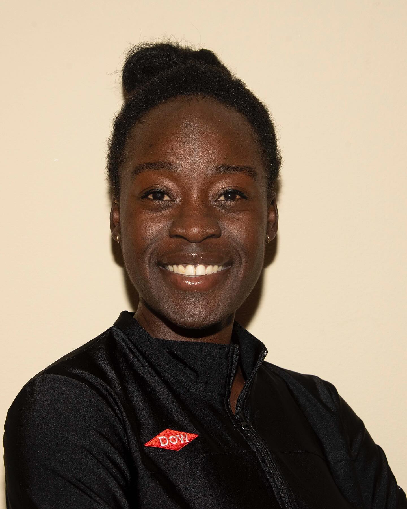
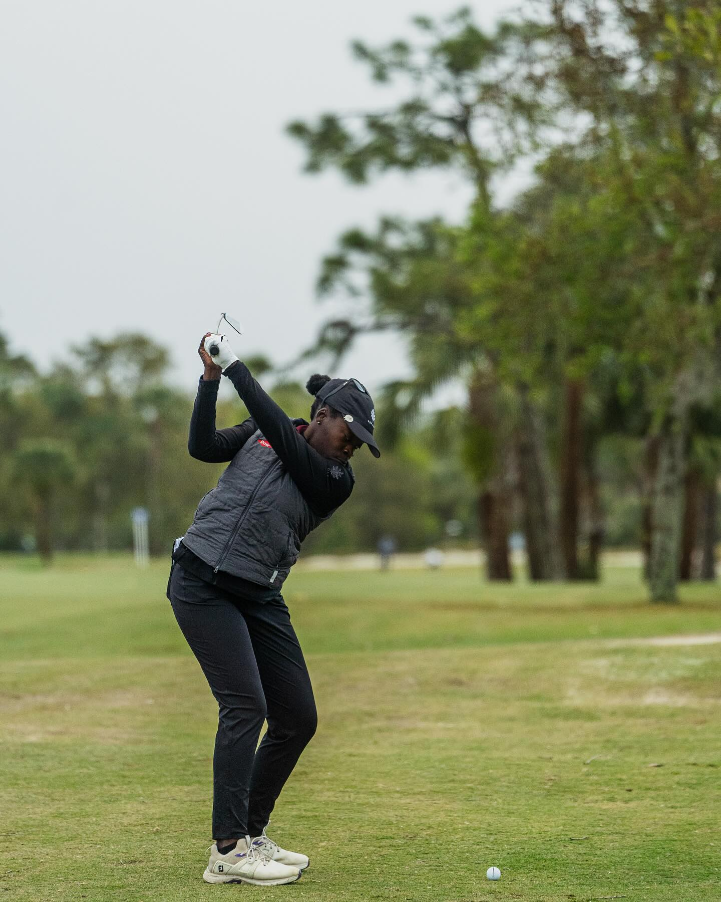
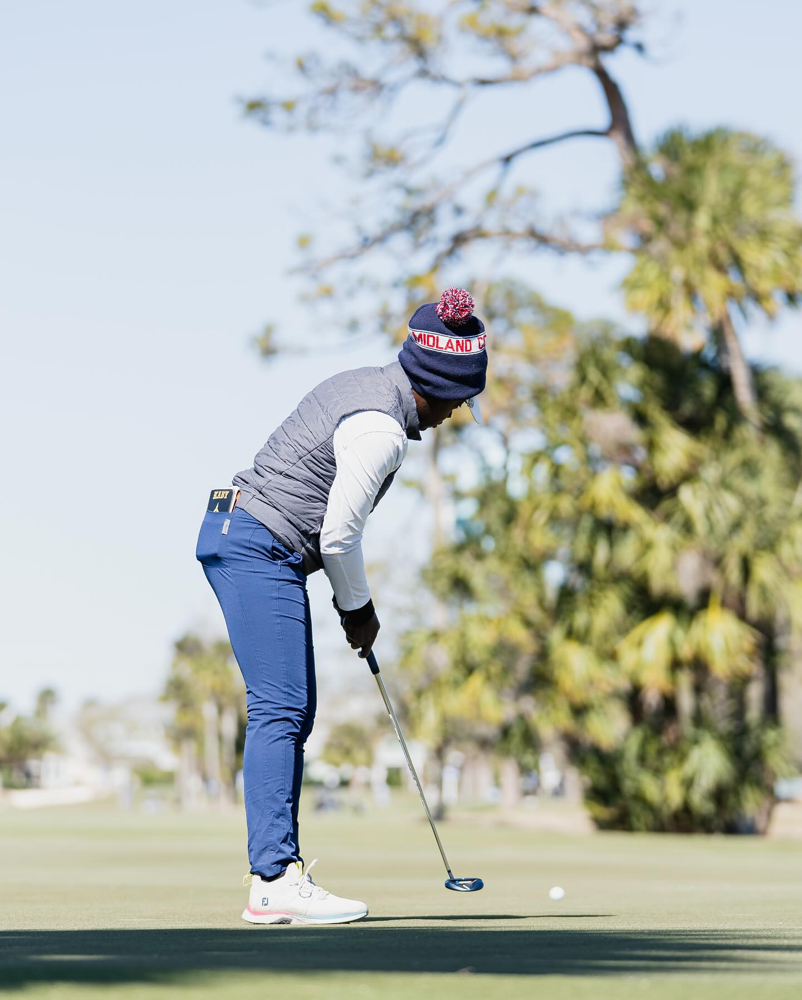
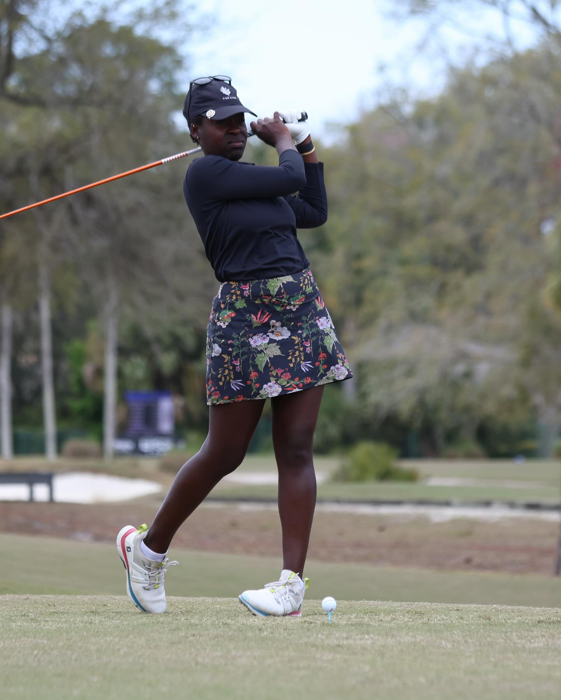
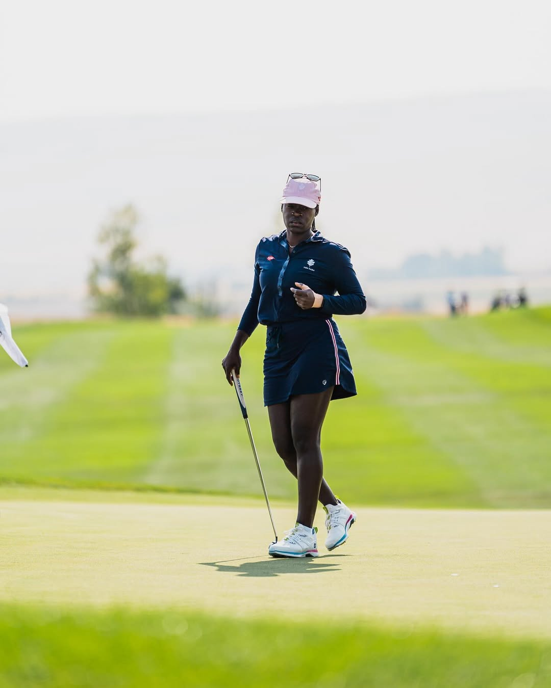

Pro Golfer
Addis Ababa-born Alabama alum, eight-season Epson Tour professional, 2025 Reliance Matrix Championship top-five finisher, and one of the players featured by the LPGA's 2026 Black History Month coverage on the road to the LPGA.
About Me
Who is Lakareber
Lakareber Abe is an Addis Ababa, Ethiopia-born professional golfer whose path ran from SEC contender at Alabama to a long-form professional career on the Epson Tour. She arrived in Tuscaloosa as the inaugural Joy McCann Culverhouse endowed scholarship recipient and quickly established herself as one of the Crimson Tide's top players.
Abe earned SEC All-Freshman honors in 2015, twice landed on the All-SEC second team, and closed her Alabama career with six top-five finishes including a win at the 2015 Mason Rudolph Championship. Her 9-under 63 in the 2016 Mason Rudolph final round set the lowest round in program history at the time.
- Addis Ababa, Ethiopia-born and University of Alabama alum
- Inaugural Joy McCann Culverhouse endowed scholarship recipient
- 2024-25 Epson stretch: 38 starts, 19 cuts, $43,939 and a best finish of T5
Abe's platform is built on longevity, resilience, and a story that connects elite college golf, sustained tour experience, and broader representation in the women's game.
Learn More

My Career
Abe's timeline blends Alabama pedigree, years of Epson Tour persistence, and a clear recent rise in her professional results.
Career Highlights
Discover More
2025
Reliance Matrix Top-Five Finish


2024 & 2025
Strongest Recent Pro Stretch
Back-to-back top-80 Epson Tour seasons produced 19 cuts made, nearly $44,000 in earnings, a low round of 64, and a T5 at the Reliance Matrix Championship.

2015 & 2016
Alabama Breakthrough Years
Won the Mason Rudolph Championship, made the SEC All-Freshman team, twice earned All-SEC second-team honors, and posted Alabama's record 63.
Tour Experience
143 Epson Tour starts from 2018 through 2025
Best Pro Finish
T3 at the 2020 Florida's Natural Charity Classic
Profiles & Press
Verified Destinations
Lakareber's public footprint spans official Epson Tour results, her Alabama legacy, ranking platforms, and current LPGA coverage. Featured visibility also includes African American Golfers Digest and global ranking sites following her professional journey.
Alabama Athletics
Official college roster and biography covering her scholarship, SEC honors, win at the Mason Rudolph Championship, and record 63.
Open profileEpson Tour
Official results archive covering eight professional seasons, highlighted by a T5 finish in 2025 and a 64 during her 2024 campaign.
Open profileLPGA & Rankings
Current visibility through LPGA editorial coverage, Rolex Rankings, and WAGR references tracking her place in the women's professional and amateur ecosystem.
Open featureProfessional Profile
Competitive Identity
Abe's story stands out for durability. She has stayed in the Epson Tour pipeline across multiple competitive cycles, weathered lean seasons, and kept putting herself in position to convert strong weeks into momentum.
The ceiling is clear in the numbers: Alabama's school-record 63, a T3 at the 2020 Florida's Natural Charity Classic, a low round of 64 in 2024, and a T5 finish in 2025. That combination of pedigree and persistence makes her profile relevant for sponsors, events, and editorial storytelling.
- 2025: 20 events, 7 cuts made, $17,921 and T5 at Reliance Matrix
- 2024: 18 events, 12 cuts made, $26,018 earned and a low round of 64
- 2026 LPGA feature spotlighting Black History Month representation on tour
International roots, SEC credentials, and sustained tour experience give Abe a professional identity with both performance depth and cultural resonance.